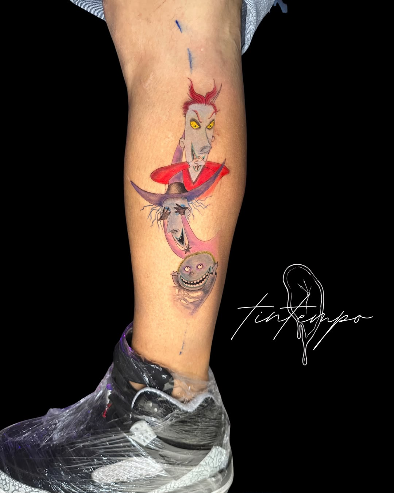
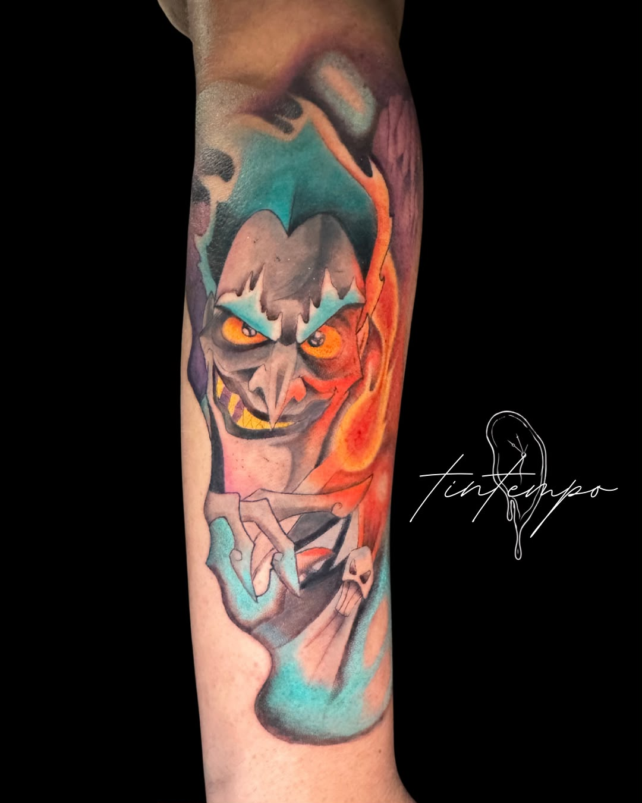
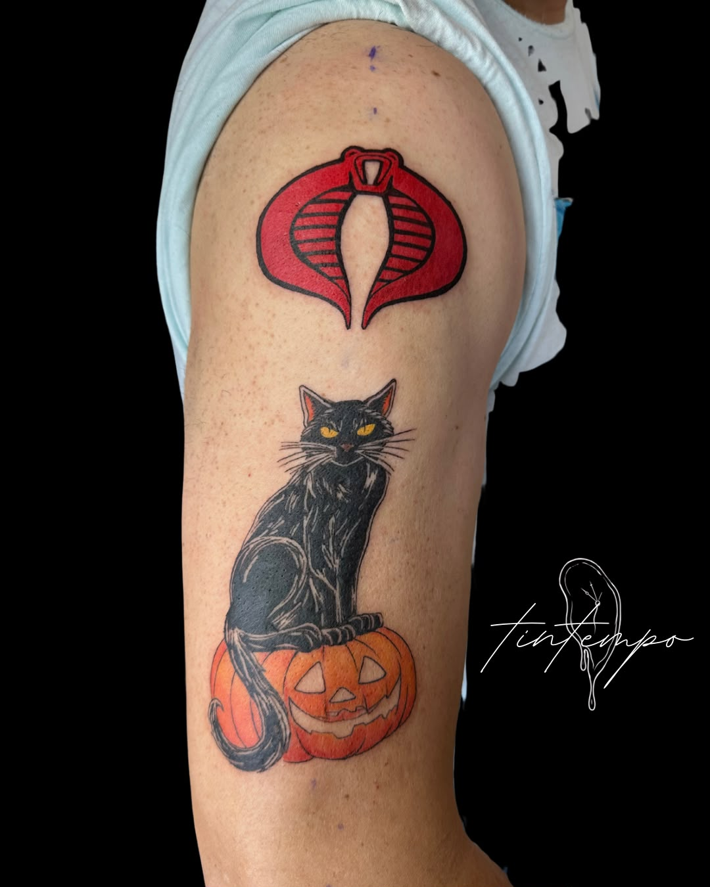
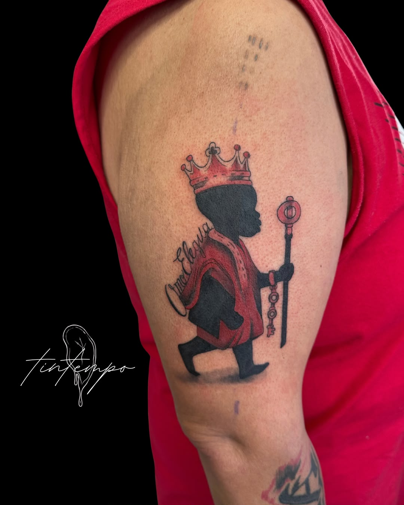
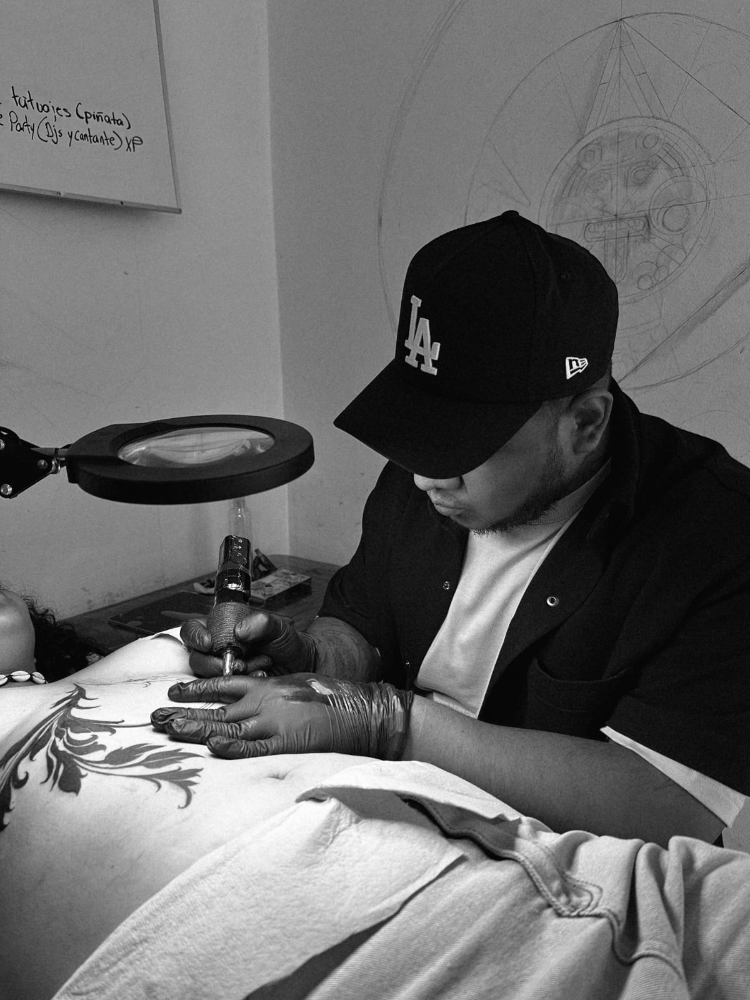

Trabajo reciente
Filtra por estilo para ver piezas terminadas de cada categoría.





Conoce al tatuador
Detrás de cada pieza hay una idea, una conversación y un trabajo personalizado. Conoce al artista que estará contigo durante tu sesión.
Cada proyecto se trabaja de forma individual para que el resultado tenga sentido contigo y con lo que quieres llevar en la piel.
Preparamos todo contigo
De la idea al diseño final, sin prisas y con atención a cada detalle.
Cuéntanos tu idea
Por WhatsApp: referencias, zona del cuerpo y tamaño aproximado.
Asesoría
Platicamos contigo sobre referencias, tamaño, ubicación y estilo.
Diseño
Preparamos el boceto y lo ajustamos contigo antes de la cita.
Sesión
Llegas al estudio, confirmamos el diseño y comenzamos.
La tinta comienza con una idea.
Cuéntanos qué tienes en mente. Selecciona los detalles de tu tatuaje y envíanos tu idea directamente por WhatsApp.
Lo que dicen
Reseñas reales de nuestra ficha de Google.
★★★★★Excelente servicio y muy buena atención.
— Geovani Lopez

★★★★★Súper recomendable. Mi primer tatuaje y todo perfecto. El chico Argén súper bueno, hizo el proceso muy ameno, no tengo duda que todos los que trabajan aquí sean súper talentosos. De verdad recomiendo al 1000, los visitaré nuevamente.
— Geovani Lopez
★★★★★Todos mis tatuajes los he hecho en este lugar ¡Y los que siguen! También les he dado a conocer el estudio a camaradas. Me siento cómodo y contento con los diseños y el lugar, son muy amables, inclusive te ayudan y te dan recomendaciones de acuerdo a tus gustos.
— Adrián Arenas García

★★★★★En serio, yo creo que es el lugar de confianza para venir a tatuarte: todo limpio, estudio privado, con música o si quieres ver la tele. Todo increíble, ni hablar de los tatuajes que te realizan, todo estupendo.
— Ángeles Saldívar Sebastián
Visítanos o escríbenos
Trabajamos con cita previa. Si es tu primera vez, empieza por WhatsApp — ahí resolvemos dudas de diseño, precio y cuidados antes de agendar.
Antes de tu cita
- ¿Piden anticipo?
- Sí, para apartar fecha y artista una vez confirmado el diseño.
- ¿Hay edad mínima?
- 18 años. Menores solo con un tutor presente y su autorización.
- ¿Qué material usan?
- Todo el material de piel es desechable y de un solo uso.